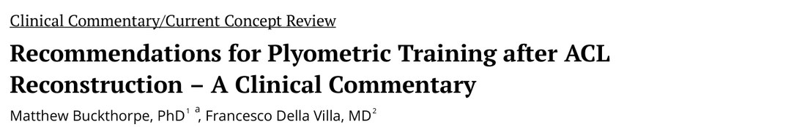
🔖原文首页（IJSPT 2021 年第 16 卷第 3 期）
📚 文献卡片
▪ 英文原题：Recommendations for Plyometric Training after ACL Reconstruction – A Clinical Commentary（ACL 重建术后增强式训练建议：临床评论）
▪ 作者：Matthew Buckthorpe, PhD · Francesco Della Villa, MD
▪ 机构：Isokinetic 医疗集团教育与研究部，FIFA 卓越医学中心（意大利博洛尼亚）；圣玛丽大学运动、健康与应用科学学院（英国伦敦）
▪ 期刊：International Journal of Sports Physical Therapy（IJSPT）
▪ 年卷期：2021;16(3):879-895
▪ PMCID：PMC8169025
▪ 文章类型：临床评论 / 当前概念综述
▪ 证据级别：5 级
▪ 关键词：rehabilitation · reconditioning · neuromuscular performance · movement performance · injury prevention
ACL 重建（ACLR）后很多人回不到运动或原有水平；回去的人再伤风险很高，年轻运动员中近三分之一会再次膝伤，多发生在重返后两年内。重返时常见伸膝最大力量和发力速率（RFD）不足、闭链力量和爆发力不足，以及功能任务中的动作不对称。
增强式训练（牵张-缩短循环：肌腱单元快速拉长后立即快速缩短）能提升爆发力、RFD、最大力量和直线/多方向速度，效果优于传统抗阻训练。但 Ebert 等发现，ACLR 患者中只有 30% 在重返运动前完成了增强式训练计划——关键障碍是缺少“怎么做、什么时候做”的指导。增强式任务的地面反作用力（GRF）峰值从 1.5 到 7 倍体重不等，选错任务容易造成不良反应。
本文给出与 ACL 功能恢复路径对齐的四阶段增强式训练方案。
| 阶段 | 时间（参考） | 强度 | 主要任务 | 进入标准（关键） |
|---|---|---|---|---|
| 1 | 10～14 周 | 低 | 双腿错时、双腿非对称、次最大双腿对称 | 伸膝等长 LSI >70%；跑台 8 km/h 跑 10 分钟；双腿蹲不对称 <20% |
| 2 | 15～18 周 | 中 | 加入最大用力双腿跳和直线单腿跳 | 单腿蹲良好；闭链力量 >1.25 倍体重（8RM）；伸/屈膝 LSI >80% |
| 3 | 19～22 周 | 高 | 多平面单腿跳为主 | 双腿跳深和单腿落地良好；闭链 >1.5 倍体重（8RM）；LSI >90% |
| 4 | 23～29 周 | 很高 | 最大单腿增强式、反应性和扰动 | 预设动作质量良好（单腿落地/减速、跳深、变向） |
一句话概括：从软地面、低高度、长触地的双腿跳开始，按力量、动作质量和关节反应逐级进阶到硬地面、单腿、多方向、反应性的跳跃。
负荷包括外部负荷（GRF）和内部关节负荷；神经肌肉系统主动吸收，肌腱、韧带、关节被动吸收。力量不足就更依赖被动结构。
• ① 任务选择：按着地/起跳时的站姿分四类（表 1、图 1）；离心期要先让身体重心减速，冲击前的动量（质量 × 速度）越大，所需离心做功越大——用力程度、落地高度、水平速度是峰值负荷的主要决定因素
• ② 力量：矢状面下肢总能量吸收越大，垂直 GRF 越小、落地屈膝越多
• ③ 表面：软表面会形变、降低关节负荷；水中或沙地上做增强式冲击更小、肌肉酸痛更轻；合适水深时 GRF 峰值比陆地低 45%～60%
• ④ 触地时间（GCT）：RFD 和功率发展速率取决于触地时间（反应力量指数），受任务和指令影响（如“尽快离地”）。适应有特异性：较长触地（>250～500 毫秒）更适合加速和多方向动作，快速直线跳（<200 毫秒）更适合提高最高跑速
表1 按着地和/或起跳站姿划分的四类增强式任务
| 类型 | 描述 | 举例 |
|---|---|---|
| 单腿 | 单腿离心承接负荷，再单腿向心发力加速；包括从一条腿跳到另一条腿（跨步跳/跑），或同侧腿连续跳（单腿跳） | 跨步跳（交替跨步、速度跨步、高度跨步等）；单腿深蹲跳、单腿下蹲跳、单腿跳深；侧向跳和单腿跳；旋转单腿跳/跳 |
| 双腿（对称） | 双腿从对称站姿同时承接和发力 | 双腿深蹲跳、双腿下蹲跳、双腿跳深；团身跳 |
| 双腿（非对称） | 双脚同时起跳和/或着地，但位置不同，每条腿的负担不同且共享 | 分腿跳、同侧着地、交替换腿 |
| 双腿（错时） | 通常一条腿着地后另一条腿起跳；属于跳跃步类动作，不是典型的单腿牵张-缩短循环 | 跳跃步；交替跳箱分腿跳 |
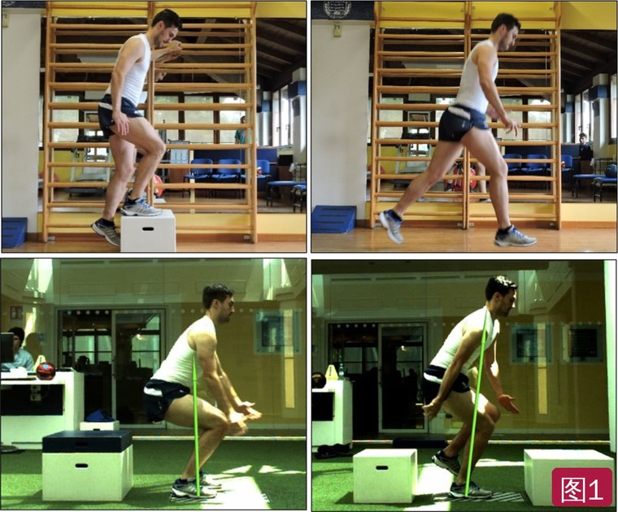
🔖图1：四类增强式——双腿错时（交替跳箱）、双腿非对称（分腿跳）、双腿对称（30 cm 跳深）、单腿（30 cm 跳深）
• 关节力矩 = 地面反作用力 × 力臂；躯干姿势改变重心位置，就改变各关节负荷
• 躯干直立、僵硬（股四头肌主导）与更大的伸膝力矩相关；髋屈/膝屈比更大可降低伸膝力矩和膝能量吸收、增加髋负荷
• 额状面和水平面膝负荷改变会增加 ACL 负荷，应避免膝主导策略 + 髋/胫骨外展 + 胫骨旋转或髋内旋
• 力量训练不会直接改善运动中的动作质量；增强式能改善神经肌肉控制，并迁移到比赛动作。运动学习需要高质量地重复，复杂度、负荷速率和强度要逐步增加
• 总量负荷：ACL 反复高负荷会使移植物蠕变甚至失败；髌股痛也是慢性过载的累积——记录组数/触地次数和任务强度
| 问题 | 要点 |
|---|---|
| 力量够吗？ | 评估闭链力量（深蹲/腿举）：跑台跑约需单腿腿举 1.25 倍体重，单腿增强式 1.5 倍，重返运动 2 倍。伸膝力量是主要障碍（术后 4 周常差 50%）；伸膝 LSI 参考：跑台慢跑 0.70，单腿落地/跳 0.80，重返运动训练 0.90，重返高水平比赛 1.0 |
| 动作够好吗？ | 动作质量：控制肢体、维持平衡和对线、无不对称或 ACL 风险动作；没有唯一“完美”的动作方式（动态系统理论：个体、任务、环境共同作用）。用额状面三条线和矢状面对线做定性评估（图 2），达不到最低水平就简化任务 |
| 负荷受得了吗？ | 只有上次训练后疼痛（数字评分 0～2）和肿胀（推扫试验）无增加或很少，才能进阶；监测迟发性肌肉酸痛，过大说明负荷太高 |
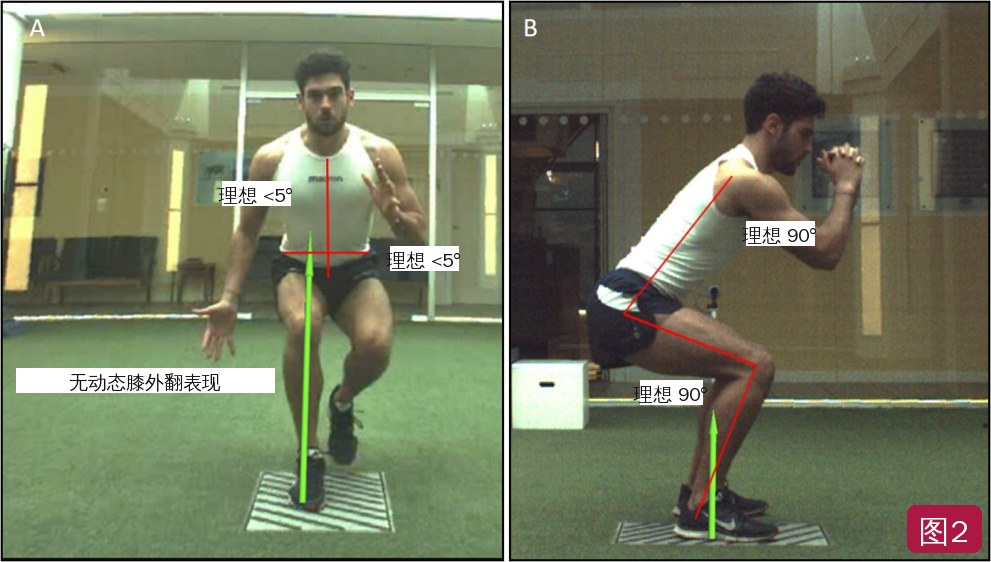
🔖图2：动作分析模型。A 额状面三条线——躯干、骨盆和下肢的稳定与对线（理想 <5°，无动态膝外翻）；B 矢状面，看踝-膝、膝-髋对线（理想约 90°）（图中英文标注已改为中文）
• 与 ACL 功能恢复路径（中期 → 后期 → 重返运动训练）对齐：第一阶段对应中期，第二、三阶段对应后期，第四阶段对应重返运动训练
• 进阶规律：进入速度（落地高度/水平速度）逐步增加；触地时间逐步缩短；从双腿到单腿；从直线（垂直 → 水平 → 侧向）到多平面
• 表面从软到硬：水/泳池 → 蹦床 → 沙地 → 草地/硬地（图 3）
• 每阶段按顺序完成，不满足该阶段标准不做该阶段任何任务；阶段内和阶段间进阶要求：动作质量好、疼痛 <2/10 和/或肿胀不增加、下肢力量持续提高
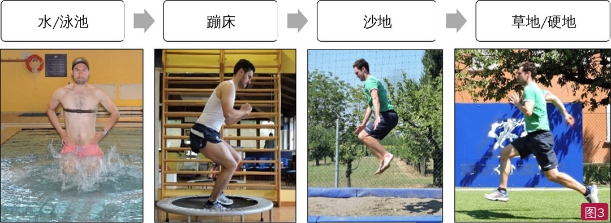
🔖图3：ACL 重建或负荷受限者增强式训练的表面进阶（表面名称已改为中文，背景横幅英文已去除）
• 以双腿错时、双腿非对称和次最大双腿对称任务为主，重心升高很少；触地时间长（>1～2 秒）；每条腿 GRF 估计 <2 倍体重
• 主要目的是动作再训练，配合跑台步态再教育；同时进行基础动作、功能力量（深蹲、硬拉、单腿进阶）、双腿落地和孤立力量训练
• 此时伸膝力量明显不足，可能出现单腿任务用伸髋代偿、双腿任务把负荷转移到健侧；即使动作看起来对，股四头肌仍受抑制，因此这一阶段增强式对增力作用很小
• 质量优先于数量和强度，最好用实时生物反馈；同时要用孤立训练恢复股四头肌力量
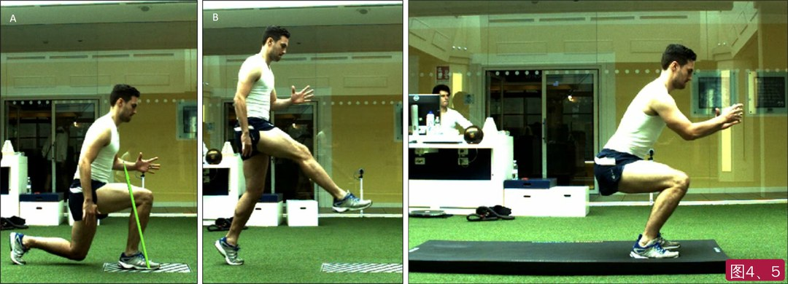
🔖图4（左）：弓步回推——向前迈步如弓步（A），减速后有力地推回起始站立位（B）；图5（右）：次最大双腿跳（下蹲跳或深蹲跳），控制落地，注重离心承接和踝、膝、髋屈曲角度，在沙地等表面上可降低 GRF 峰值
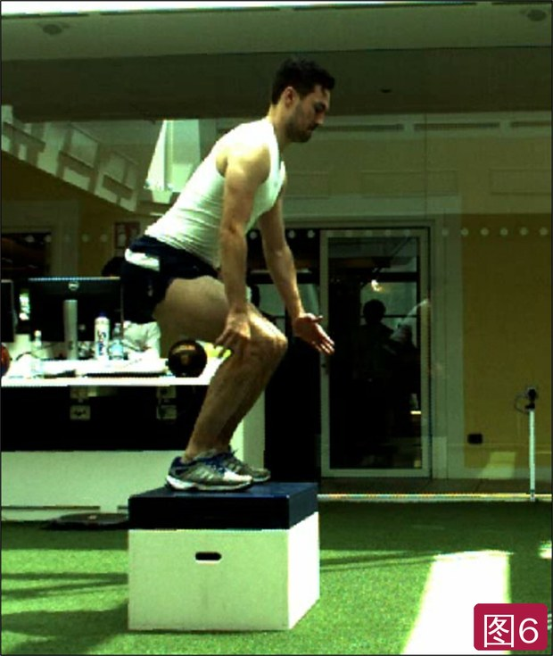
🔖图6：双腿跳上箱（深蹲跳或下蹲跳）——更关注向心发力和慢速牵张-缩短循环，同时限制落地高度、降低冲击
• 进入条件：单腿蹲良好（无过度动态膝外翻、无异常运动策略、躯干骨盆无偏移），闭链单腿负荷 >1.25 倍体重，伸膝 LSI >80%，能以良好力学在跑台上跑
• 后期康复重点是单腿离心控制（减速/落地）以及恢复爆发力和最大离心力量
• 大量使用双腿增强式发展爆发力和高负荷力学；允许最大用力的双腿增强式，但要注意落地高度
• 目标：30 cm 双腿跳深动力学和运动学良好，单腿落地/减速控制良好
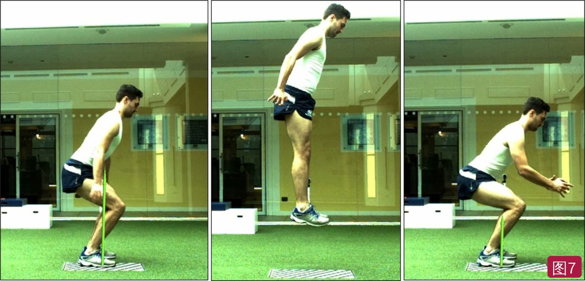
🔖图7：原地最大高度的下蹲跳或深蹲跳——去掉跳箱后从更高处落地，落地力更大
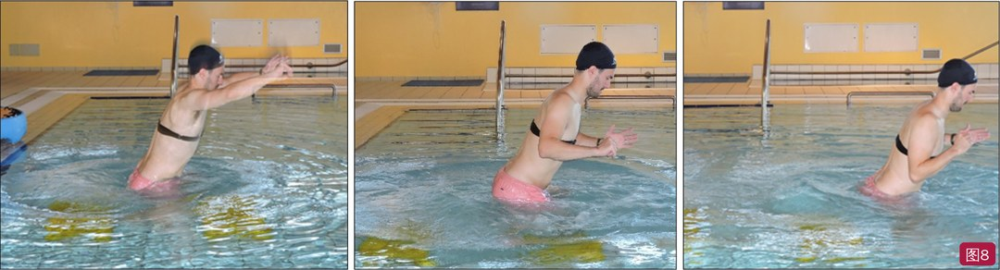
🔖图8：泳池中的单腿跳深，在合适水深（约 1 米或齐腰）下可提前一个阶段进行
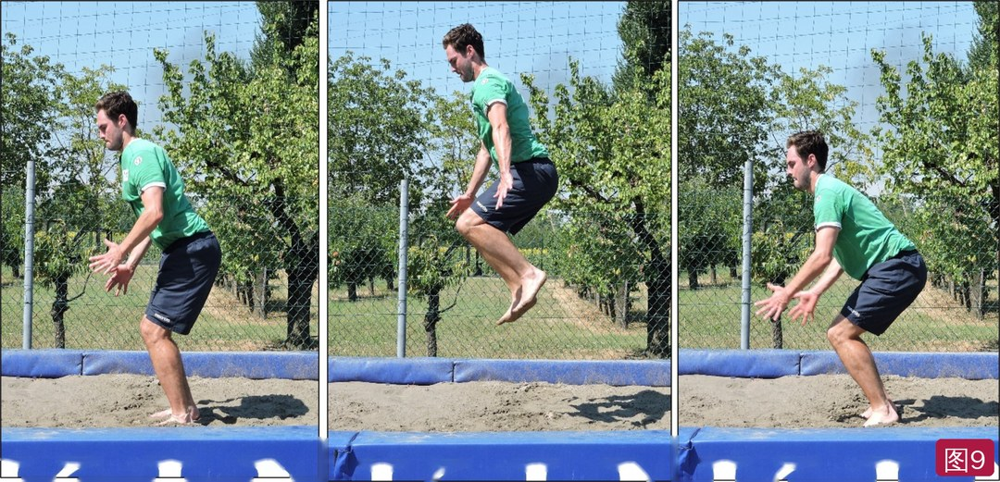
🔖图9：沙地团身跳——落地（A）后立即跳起（B），双腿对称抬高、对线良好，再落地（C）并连续重复；因从最高点落地，落地强度通常高于跳深（背景横幅英文已去除）
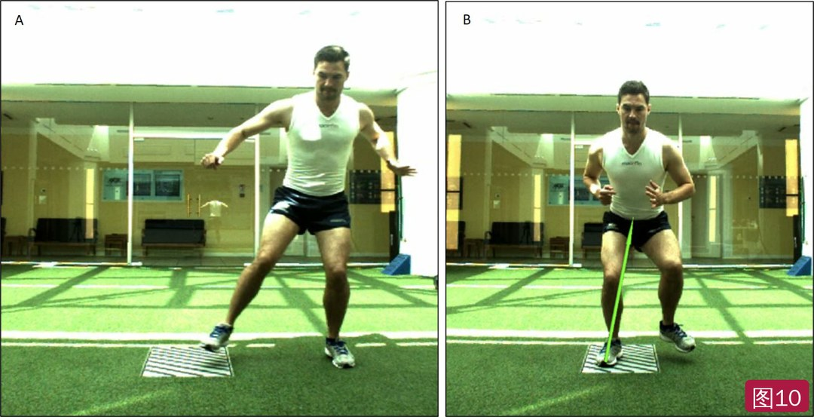
🔖图10：从左腿到右腿的侧向跳（A），控制落地并稳定（B）
• 更多使用单腿增强式，并配合多方向场上协调训练（预设协调任务）
• 单腿任务从向前、垂直 → 侧向 → 多方向；双腿增强式用于继续提高力量、爆发力和 RFD
• 单腿任务逐步缩短触地时间，模拟运动动作：从 1～2 秒到 0.25～0.4 秒
• 阶段末目标：高速变向运动学良好，单腿跳深和多平面单腿跳表现良好；最好用高速摄像（如 240 Hz）做矢状面和额状面定性分析
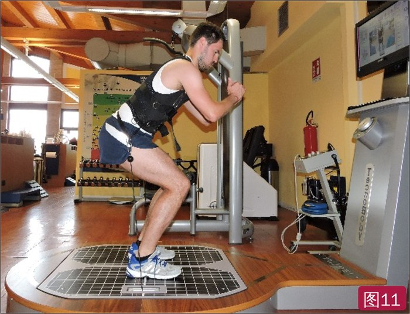
🔖图11：负重双腿下蹲跳或深蹲跳
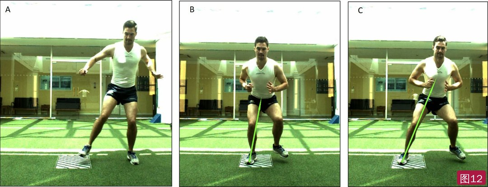
🔖图12：从左腿跳到右腿（A）落地（B）后立即跳回右腿（C）——与第二阶段只落地不同
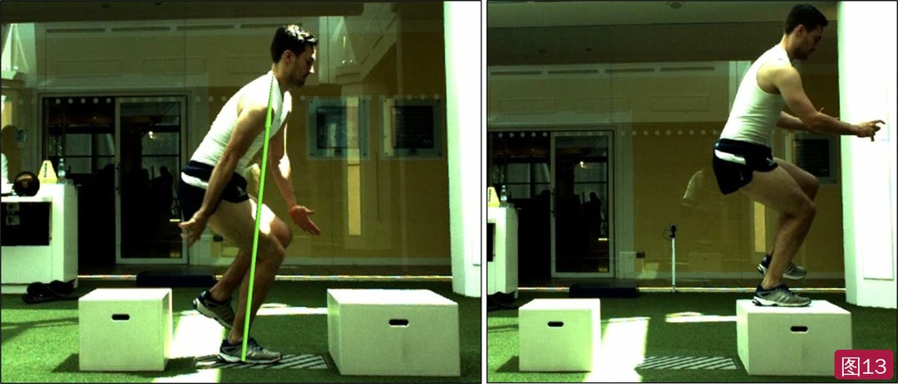
🔖图13：单腿跳深，用另一个跳箱增加控制挑战并降低最终落地高度
• 在第三阶段基础上，用最大用力的单腿增强式实现动作模式自动化，并提升神经肌肉表现
• 进阶到反应性动作，为专项训练做准备；在增强式中加入扰动挑战神经肌肉控制（图 15）
• 重返运动前应在运动类任务和专项情境下具备良好动作质量；在场上训练中目测并录像专项动作（如反应性切步、绕障碍变向）
• 还应完成场上康复、纠正肌力失衡、恢复体能，并通常已获运动医学医生和/或手术医生同意
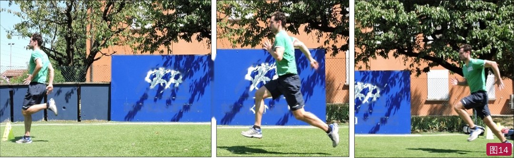
🔖图14：在场上进行更高强度的跑和跨步跳（背景横幅英文已去除）
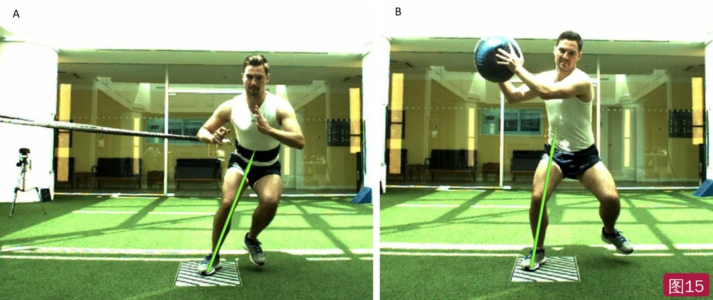
🔖图15：用绳子（A）和药球（B）制造扰动和/或放大侧向动量的侧向跳回
表2 与 ACL 重建术后功能恢复框架对齐的四阶段增强式方案
| 第一阶段 参考第 10～14 周 · 强度低 · 每次约 50 次触地 | |
| 阶段目标 | • 关节活动度完全恢复 • 肌力失衡恢复到与“训练过的”健侧（或伤前）相差 20% 以内 • 恢复基本动作模式和跑步步态 • 避免体能下降 |
| 增强式用途 | 以低强度、次最大的双腿增强式为主，支持离心/动作控制，为跑步做准备 |
| 进入标准 | • 静息痛 0～1，日常活动痛 <2 • 完全伸膝；屈膝 >120° • 双腿蹲良好（自重和负重），两腿负重不对称 <20% • 等长伸膝 LSI >70% • 能在跑台以 8 km/h 跑 10 分钟 |
| 任务类型 | 双腿错时、双腿非对称、双腿对称（次最大） |
| 增强式任务 | • 弓步回推 • 深蹲跳上箱 • 下蹲跳上箱 • 原地跳跃步 • 上台阶跳（同侧腿） • 上台阶跳（交替腿） • 向前跨步停稳 |
| 其他动作任务 | • 单腿动作进阶（从双腿蹲到单腿蹲） • 从台阶双腿落地 • 蹦床单腿落地 • 重新开始跑台跑 • 泳池中进行第二阶段增强式（水深约身高 60%） |
| 第二阶段 参考第 15～18 周 · 强度中 · 每次约 100 次触地 | |
| 阶段目标 | • 发展功能力量 • 发展闭链离心力量 • 发展双腿爆发力 • 发展单腿离心控制 • 继续纠正下肢肌力失衡 |
| 增强式用途 | 中等强度的双腿和单腿增强式，发展下肢爆发力和离心控制，尤其是单腿减速能力 |
| 进入标准 | • 双腿落地运动学良好 • 单腿蹲运动学良好 • 闭链力量 >1.25 倍体重（8RM）或 1.5 倍体重（1RM/等长峰值力） • 等速伸膝、屈膝 LSI >80% |
| 任务类型 | 双腿错时、双腿非对称、双腿对称、单腿（直线） |
| 增强式任务 | • 双腿深蹲跳（原地、向前） • 双腿下蹲跳（原地、向前） • 双腿跳深（30 cm 箱） • 分腿跳（同侧着地） • 分腿跳（交替） • 跨步落地（向前、侧向，站立起始和原地跑起始） • 跨步落地回推（向前、侧向，站立起始和原地跑起始） • 单腿深蹲跳/下蹲跳接双腿落地 • 单腿深蹲跳/下蹲跳上箱 |
| 其他动作任务 | • 跑台跑（12～20 km/h） • 户外直线动作（跑、绳梯、侧滑步） • 泳池中进行第三阶段增强式（水深约身高 60%） |
| 第三阶段 参考第 19～22 周 · 强度高 · 每次约 150 次触地 | |
| 阶段目标 | • 神经肌肉功能指标恢复到相差 10% 以内（膝及相邻关节力量、闭链力量和爆发力） • 恢复高负荷动作质量 • 恢复有氧体能 |
| 增强式用途 | 高强度的双腿和单腿增强式，发展下肢爆发力、多平面动作控制和加速能力 |
| 进入标准 | • 双腿跳深力学良好 • 单腿落地控制良好 • 闭链力量 >1.5 倍体重（8RM）或 2 倍体重（1RM/等长峰值力） • 等速伸膝、屈膝 LSI >90% |
| 任务类型 | 双腿错时、双腿非对称、双腿对称、单腿（多平面） |
| 增强式任务 | • 旋转跳并落地 • 侧向跨步-跳-回 • 团身跳 • 跨步切（30°/45°/60°/90°） • 单次单腿跳（原地/向前/侧向/45°/90°） • 连续单腿跳（原地/向前/侧向/45°/90°） • 单腿跳深（箱上/原地/侧向上箱） |
| 其他动作任务 | • 户外预设协调训练（多方向动作） • 高速直线跑/冲刺 |
| 第四阶段 参考第 23～29 周 · 强度很高 · 每次约 200 次触地 | |
| 阶段目标 | 恢复专项动作质量、体能和技能，建立动作“量”，为重返运动做准备 |
| 增强式用途 | 优化下肢爆发性神经肌肉表现，支持专项动作再训练；注意负荷管理 |
| 进入标准 | • 闭链力量 >1.5 倍体重（8RM）或 2 倍体重（1RM/等长峰值力） • 预设动作质量良好（单腿落地/减速，双腿和单腿跳深，室内和/或场上变向力学） |
| 任务类型 | 双腿错时、双腿非对称、双腿对称、单腿（多平面） |
| 增强式任务 | • 场上进阶跨步跳 • 跨栏下蹲跳 • 负重深蹲跳/下蹲跳 • 双腿/单腿跳深（增加箱高） • 侧向单腿跳（弹力带/绳子/药球） • 单腿 90° 侧向跳深 • 跨步切（加扰动） • 场上敏捷训练 • 场上变向训练（加扰动/外部注意焦点和专项环境） |
| 其他动作任务 | 场上专项训练，包括反应性动作、接触/扰动训练和技术训练 |
时间仅供参考，方案应始终按患者的反应调整。LSI：肢体对称指数；RM：最大重复次数。
• 证据级别低：5 级临床评论，方案来自文献和作者机构经验，没有验证其能否改善重返率或降低再伤
• 亮点：把增强式按强度（类型、高度/速度、触地时间、表面）分级，并与力量、动作质量、关节反应的标准挂钩，每阶段给出具体任务和触地次数，可直接用于临床
• 数值多为经验建议：腿举倍数、LSI 阈值、每阶段触地次数等缺少直接验证；部分评估需要等速测力仪、测力台或高速摄像
• 前后不完全一致：第二阶段进入标准，正文写伸膝 LSI >80%，表 2 写“伸膝和屈膝 LSI >80%”；第一阶段疼痛标准，正文写 0～2，表 2 写静息 0～1、日常活动 <2
• 小瑕疵：“GFR”应为 GRF；“multipolar motor control”应为 multiplanar；“compliments”应为 complements；表 2 第二阶段“run of treadmill”应为 run on
① 强度看什么：跳的类型、落地高度/水平速度、触地时间、表面软硬、动作质量
② 开练前三问：力量够吗（腿举倍数、伸膝 LSI）？动作好吗？关节受得了吗（疼痛 ≤2、无肿胀增加）？
③ 第一阶段：低强度双腿错时/非对称跳，长触地，约 50 次
④ 第二阶段：最大用力双腿跳 + 直线单腿跳，目标 30 cm 双腿跳深和单腿落地，约 100 次
⑤ 第三阶段：多平面单腿跳，触地 1～2 秒缩到 0.25～0.4 秒，约 150 次
⑥ 第四阶段：最大单腿、反应性和扰动训练，约 200 次，准备重返赛场
欢迎关注骨科康复小黄公众号，获取更多物理治疗的专业知识！
📄参考文献：
Buckthorpe M, Della Villa F. Recommendations for Plyometric Training after ACL Reconstruction – A Clinical Commentary. Int J Sports Phys Ther. 2021;16(3):879-895. PMCID: PMC8169025.
文中 15 张图片均来自原文：图 2 英文标注和图 3 表面名称已改为中文，背景横幅英文已去除；表 1～2 已译为中文，仅用于学术交流。